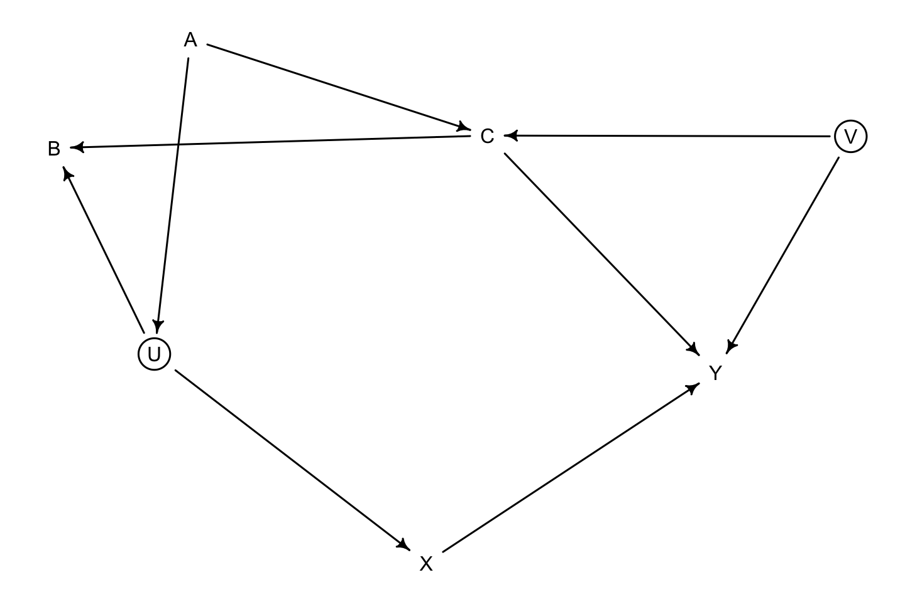
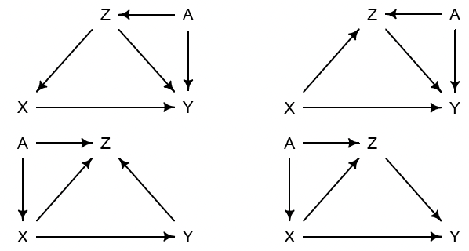
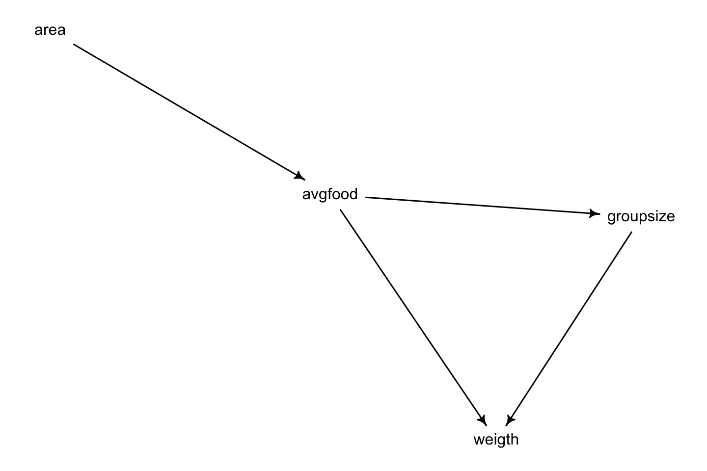
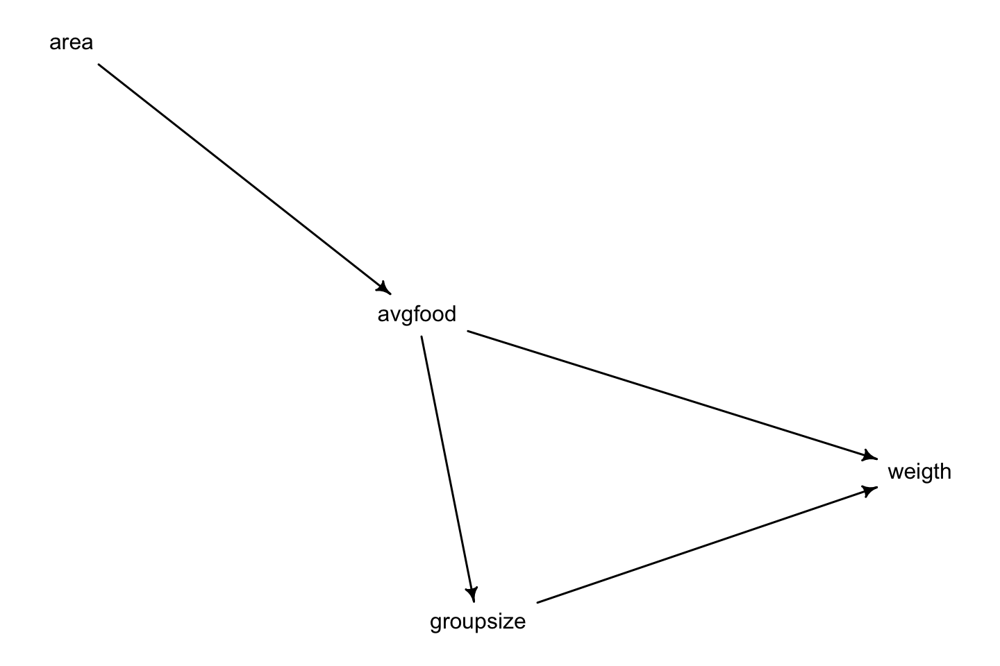
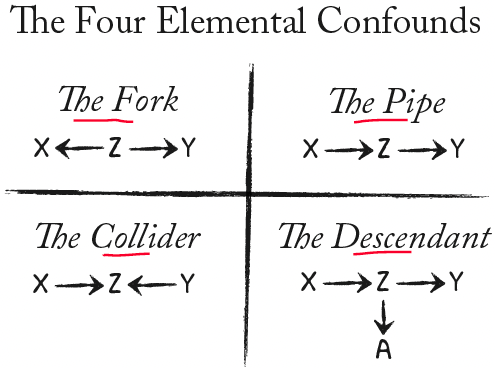
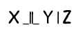
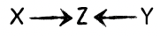
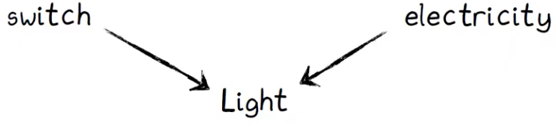
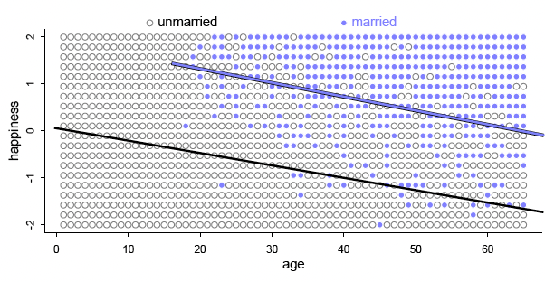
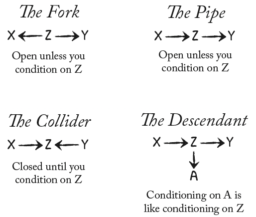

7 Chapter 6 - The Haunted DAG & The Causal Terror
It is called the haunting DAG, as we see that checking different variables, may create colliders, where doing inference, the actual state will be skewed, e.g., see lecture notes @ref(lecture-notes—not-integrated-in-the-text).
The following sections elaborates on three hazards:
- Multicollinearity
- Post Treatment Bias
- Collider Bias
7.1 Multicollinearity
Multicollinearity is in its core not a bad effect in your model, although you want to avoid it when doing inference. In the litterature, there is an example of predicting heights based on the length of each leg, we see that the sum of the coefficient will add to the mean of the leg length in general.
Hence overall the model will predict the right results although inference wise it is counter intuitive.
In another example we have two highly correlated predictor variables that goes the opposite way of each other. We know in this example that these are in fact explained by the same (unobserved) variable, hence when you know one, you will also know the other.
L = lactose, F = fat. D = density. When the density is low, it has high lactose and low fat and the opposite. Thus if we know F, then we know F and L and if we know D, we will know both L and F, hence we want to only include one of the observed variables into the model.
In this example we saw from precis that when each observed variable is regressed individually the mean and compatibility intervals are far on each side of 0, although when both are included it will for both variables be centered, more or less, at 0 and have CI on both sides of 0.
Notice that just because two variable correlate, we do not by default want to remove them!
Conclusion: Just because you have many causal explanatory variables at hand, it does not mean that you should use all of them.
7.2 Post Treatment Bias
did not get this
7.3 Collider Bias
For this I will refer to the examples in the book about the grandchildren and the parents influence on childrens education McElreath (2020) pp. 180 - 182.
In its basics, when we include one variable, it might also indirectly include information on an unobserverd variable that is explaning both the predictor and the target variable. Hence the effect in the predictor P will implicitly also be reflected in the model. I.e., the unobserved effect will be hidden / under the radar, thus we will not be able to distinguish this effect from the actual effect of P.
7.4 Confronting Confounding
No matter the size of the DAG, the model will consist of the following types:

There are scenarios we want to avoid etc.
- That I could elaborate on in the notes
The approach to analyzing the DAG:
- List all paths (paths disregard directions) connecting X and Y
- Classify each path by whether it is open or closed. A path is open unless it contains a collider
- Classify each path by whether it is a backdoor path. A backdoor path has an arrow entering X.
- If there are any open backdoor paths, decide which variable(s) to condition on o close it (if possible).
Pages 186 - 187 has examples on scenarios to avoid and how to close backdoors.
We have the following example where we want to analyze relationship on W to D.
library(dagitty)
dag_6.2 <- dagitty( "dag {
A -> D
A -> M -> D
A <- S -> M
S -> W -> D
}"
)
# coordinates(dag_6.2) <- list(x = c(S=3,W=3,M=2,A=0,D=0)
# ,y = c(S=0,W=3,M=2,A=0,D=3))
drawdag(dag_6.2)
There are 3 open backdoors:
- S -> A
- S -> M
- S -> W
These all flow from S and affects either W or D. Solution: is to control for S, which will
We can control for this with adjustmentSets(), which will show variables that we should make indepent given we control for a specific variable.
adjustmentSets( dag_6.2 , exposure="W" , outcome="D" )## { A, M }
## { S }We see that we can either control for A and M or S.
We can also let the model find the conditional independences by saying:
impliedConditionalIndependencies(dag_6.2)## A _||_ W | S
## D _||_ S | A, M, W
## M _||_ W | SThus we see that A and W are independent given we control for S.
7.5 Exercises
7.5.1 6M1
Modify the DAG on page 186 to include the variable V, an unobserved cause of C and Y: C <- V -> Y. Reanalyze the DAG.How many paths connect X to Y? Which must be closed? Which variables should you condition on now?
library(dagitty)
library(rethinking)
dag <- dagitty( "dag {
U [unobserved]
V [unobserved]
X [exposure]
Y [outcome]
A -> U
A -> C
U -> B
U -> X
C -> B
C -> Y
X -> Y
C <- V -> Y
}"
)
drawdag(dag)
Paths (undirected) from X to Y.
List all paths (paths disregard directions) connecting X and Y
- X,Y
- X,U,B,C,Y
- X,U,A,C,Y
- X,U,B,C,V,Y
- X,U,A,C,V,Y
Classify each path by whether it is open or closed. A path is open unless it contains a collider
- We see that B and C are colliders, hence we will not want to touch those, as it will open up the flows to the leading effects.
Classify each path by whether it is a backdoor path. A backdoor path has an arrow entering X.
- We see that U affects X, hence there is a backdoor. hence we want to close this relationship
If there are any open backdoor paths, decide which variable(s) to condition on o close it (if possible).
- We see that U is a backdoor path, although it is unobserved hence we cannot adjust the model for that. (But can we adjust for A?)
7.5.2 6M3
Learning to analyze DAGs requires practice. For each of the four DAGs below, state which variables, if any, you must adjust for (conditionon) to estimate the total causal influenceof X on Y.

- We must condition on Z, as the pipe from A to Y is being closed by conditioning on Z. One could
Will this also terminate the flow directly from A to Y?
(top right): Should not condition on anything. We see that X to Y is causal and open. We see that Z is a collider, hence we dont want that included.
(bottom left): We see that Z is a collider, we dont want to control for that, thus by default A and Y are independent. Hence we just include X in the model.
We include X and A.
We see that in the 4th example that Z is not a collider, that is because if we list all the paths, there will not be any arrows pointing towards each other.
- X -> Y
- X -> Z -> Y
- X <- A -> Z -> Y
Where in the third example we had:
- X -> Z <- Y (We have a collider)
- X <- A -> Z <- Y (We have a collider)
- X -> Y
library(dagitty)
library(rethinking)
dag1 <- dagitty( "dag {
X [exposure]
Y [outcome]
A -> Z -> X -> Y
Z -> Y
A -> Y
}"
)
dag2 <- dagitty( "dag {
X [exposure]
Y [outcome]
A -> Z -> Y
A -> Y
X -> Z
X -> Y
}"
)
dag3 <- dagitty( "dag {
X [exposure]
Y [outcome]
A -> X -> Y
A -> Z
X -> Z
Y -> Z
}"
)
dag4 <- dagitty( "dag {
X [exposure]
Y [outcome]
A -> Z -> Y
A -> X
X -> Y
X -> Z
}"
)
adjustmentSets(x = dag1,exposure = "X",outcome = "Y")## { Z }adjustmentSets(x = dag2,exposure = "X",outcome = "Y")## {}adjustmentSets(x = dag3,exposure = "X",outcome = "Y")## {}adjustmentSets(x = dag4,exposure = "X",outcome = "Y")## { A }7.5.3 6H
library(rethinking)
library(dagitty)
data(foxes)
dfs <- foxes
dfs$group <- scale(dfs$group)
dfs$avgfood <- scale(dfs$avgfood)
dfs$groupsize <- scale(dfs$groupsize)
dfs$area <- scale(dfs$area)
dfs$group <- scale(dfs$weight)
dag <- dagitty( "dag {
weigth [outcome]
weigth <- groupsize
area -> avgfood -> groupsize
avgfood -> weigth
}"
)
drawdag(dag)
7.5.4 6H3
Use a model to infer the total causal influence of area on weight. Would increasing the area available to each fox make it heavier (healthier)? You might want to standardize the variables. Regardless, use prior predictive simulation to show that your model’s prior predictions stay within the possible outcome range.
library(rethinking)
library(dagitty)
dag3 <- dagitty( "dag {
weigth [outcome]
area [exposure]
weigth <- groupsize
area -> avgfood -> groupsize
avgfood -> weigth
}"
)
drawdag(dag)
Possible paths:
- area > avgfood > weight
- area > avgfood > groupsize > weight
We just need to include Area.
Now for the analysis.
library(rethinking)
data(foxes)
d <- foxes
d$W <- standardize(d$weight)
d$A <- standardize(d$area)
m1 <- quap(
alist(
W ~ dnorm( mu , sigma ), #Weight is a normal distribution
mu <- a + bA*A, #the mean weights are defined by an intercept and a slope for A (area)
a ~ dnorm(0,0.2), #The intercept prior
bA ~ dnorm(0,0.5), #The slope prior
sigma ~ dexp(1) #The variance
), data=d )
precis(m1)
|
|
|
|
We see that the intercept is 0 although with a standard deviation of 0.08. We then see for each unit of area the weight is increasing by 0.02, while the standard deviation is 0.09m thus the weight is expected to both go up and down.
Thus statistically we cannot infer anything about the relationship.
7.5.5 6H4
Now infer the causal impact of adding food to a territory. Would this make foxes heavier? Which covariates do you need to adjust for to estimate the total causal influence of food.
Now we want to see if food is increasing weight, thus X is avgfood and Y is Weight
We see that there is a pipe from avgfood through groupsize, that implies that there is a direct effect from avgfood to weight, but also an indirect effect through groupsize. The task just says to measure the overall effect of food. Hence we want to construct a model only with food. We can do that as there are no backdoors to our explanatory variable.
library(rethinking)
data(foxes)
head(foxes)| group | avgfood | groupsize | area | weight |
|---|---|---|---|---|
| 1 | 0.37 | 2 | 1.09 | 5.02 |
| 1 | 0.37 | 2 | 1.09 | 2.84 |
| 2 | 0.53 | 2 | 2.05 | 5.33 |
| 2 | 0.53 | 2 | 2.05 | 6.07 |
| 3 | 0.49 | 2 | 2.12 | 5.85 |
| 3 | 0.49 | 2 | 2.12 | 3.25 |
d <- foxes
d$W <- standardize(d$weight)
d$AF <- standardize(d$avgfood)
m2 <- quap(
alist(
W ~ dnorm(mu,sigma),
mu <- a + bAF*AF + sigma,
a ~ dnorm(0,0.2),
bAF ~ dnorm(0,0.5),
sigma ~ dexp(1)
)
,data = d
)
precis(m2)
|
|
|
|
We see that there is a great deal of uncertainty as the mean beta coefficient is -0.02, although the standard deviation suggests that it can both go up and down (the weight)
Also notice that we did find that area had no effect on weight, and it makes sense that there is cause from area to avgfood, and thus increasing avgfood is similar to increasing area, thus it is expected with no effect. Although it would also be an explanation that a larger area would enable them to roam more around, hence food density would probably have been a better variable or at least interesting.
7.5.6 6H5
Consider your own research questing. Draw a DAG to represent it. What is the testatable implications of your DAG. Are there any variables you could condition on to close all backdoor paths? Are there unobserved variables that yoy have omitted? Would a reasonable colleague imagine additional threats to causal inference that you have ignored?
Lets just take the same data as above and add groupsize instead.
d <- foxes
d$W <- standardize(d$weight)
d$G <- standardize(d$groupsize)
m3 <- quap(
alist(
W ~ dnorm(mu,sigma),
mu <- a + bG*G + sigma,
a ~ dnorm(0,0.2),
bG ~ dnorm(0,0.2),
sigma ~ dexp(1)
)
,data = d
)
precis(m3)
|
|
|
|
We see that group size tend to have a negative effect on the weight, hence by one group size unit increase standard deviation we will expect to weigh less.
7.6 Lecture notes - not integrated in the text
There are the following types:

The fork: We see that Z is a commen cause, thus when we know the outcome of Z, there is no relationship between X and Y.

The pipe: We see that Z is a mediator. We see that if we know (Condition) on Z, we remove the relationship between X and Y.
We see that this is very similar to the fork.

The collider: We see that there is a relationship from X to Z and Y to Z. Although if we control for Z, there is no relationship between X and Z. Thus, if we make the model as a linear regression, we will form a spurious relationship between X and Y, that we want to avoid.
The following is an example.

They must both be on, for the light to be on, but if switch is on and electicity is off, then the light is also off, hence if we know one of the parents, then we know the state of the other.
Collider confounding: That is to identify if there actually is a relationship between two variables that explain the target variable.
We see in the following example, we control for marriage, and the two subsets of data will make the age appear to have a negative effect on happiness, while we know that that is not true (the data was simulated.)

Summary:

For the pipe we dont want to control for Z, as that will terminate the relationship from C to Y.
For the Collider we need to take care and not create a spurious relationship. We want to leave the collider alone, hence we do not touch it.